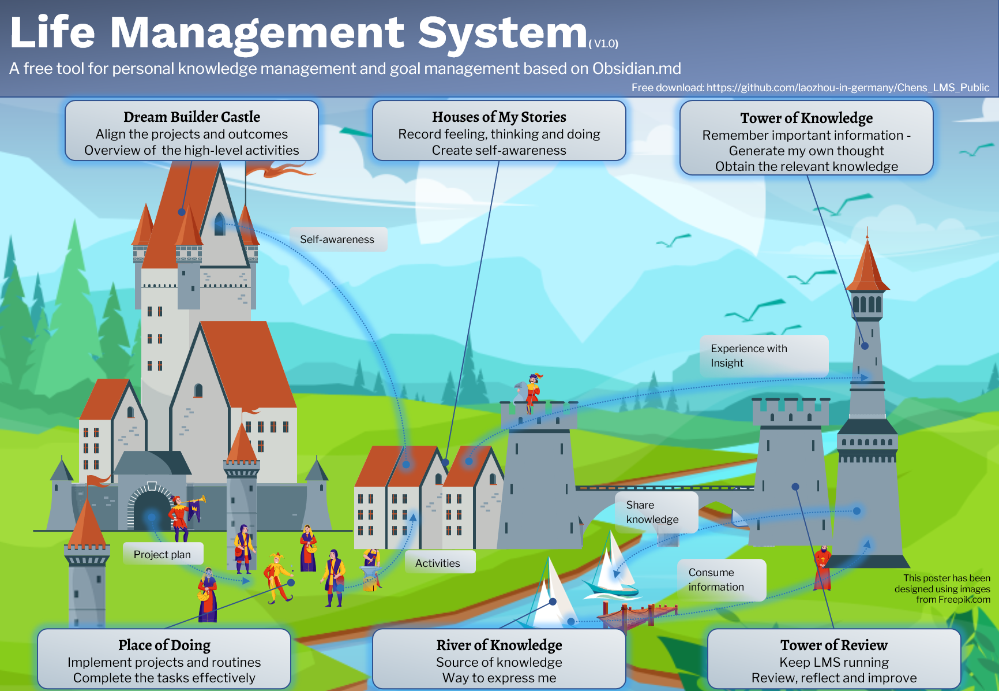

介绍
Intro
LMS（Life Management System）是一款基于Obsidian.md的个人知识管理和目标管理的免费工具。
它由4个部分组成:
- 目标管理：将项目和成果与个人愿景保持一致，对重要的高层活动保持概览。
- 日记：记录个人感受、思考和做事，创造自我认识，更了解自己。
- 知识管理：记住重要信息，产生自己的思想（批判性思维），并获得相关知识以实现人生目标。
- 定期回顾：保持以上部分运行、审查、反映和改进系统。
这4个部分相互影响。我将它们与中世纪城镇中的区域进行比较。这个镇有6个主要区域：
- 造梦者城堡（目标管理）
- 我的故事之家（日记）
- 知识之塔（知识管理）
- 回顾之塔（定期回顾）
- 实践广场（项目实施）
- 知识之河（外部世界）
各区的用途如下图所示。
 更多见LMS 作为中世纪小镇
我希望 LMS 为你提供从一个开箱即用的 Obsidian.md 模板库，并启发你创建自己的工作流程，进而管理目标、撰写日志和管理知识。
Github
Github
LMS 托管在 GitHub 上：laozhou-in-germany/Chens_LMS_Public
感谢
Credit
- Obsidian.md
- Progressive summarization from Forte Labs
- Zettelkasten from Niklas Luhmann
- Linking Your Thinking
- August Bradley - Life Design - PPV
- tot0/ObsidianPPV: PPV implementation for Obsidian
- Blue-Topaz_Obsidian-css: A blue theme for Obsidian.
插件 (已整合)
- valentine195/obsidian-admonition: Adds admonition block-styled content to Obsidian.md (github.com)
- aidenlx/alx-folder-note: Add description, summary, and more info to folders with folder notes. (github.com)
- shabegom/buttons: Buttons in Obsidian (github.com)
- liamcain/obsidian-calendar-plugin: Simple calendar widget for Obsidian. (github.com)
- tth05/obsidian-completr: Auto-completion plugin for the obsidian editor. (github.com)
- Johnson0907/obsidian-daily-notes-viewer (github.com)
- blacksmithgu/obsidian-dataview: A high-performance data index and query language over Markdown files, for https://obsidian.md/. (github.com)
- dvcrn/obsidian-filename-heading-sync: Obisdian.md plugin to keep the filename and the first header of the file in sync (github.com)
- aidenlx/folder-note-core: Provide core features and API for folder notes in obsidian (github.com)
- chhoumann/MetaEdit: MetaEdit for Obsidian (github.com)
- Razumihin/obsidian-fullscreen-plugin (github.com)
- liamcain/obsidian-periodic-notes: Create/manage your daily, weekly, and monthly notes in Obsidian (github.com)
- tnichols217/obsidian-columns (github.com)
- obsidian-tasks-group/obsidian-tasks: Task management for the Obsidian knowledge base. (github.com)
- vslinko/obsidian-outliner: Work with your lists like in Workflowy or RoamResearch (github.com)
- chhoumann/quickadd: QuickAdd for Obsidian (github.com)
- tgrosinger/recent-files-obsidian: Display a list of most recently opened files (github.com)
- mdelobelle/obsidian_supercharged_links: obsidian plugin to add attributes and context menu options to internal links (github.com)
- SilentVoid13/Templater: A template plugin for obsidian (github.com)
- ryjjin/Obsidian-shortcuts-extender: Plugin for Obsidian: Use shortcuts for input special symbols and changing level of headings without language switching